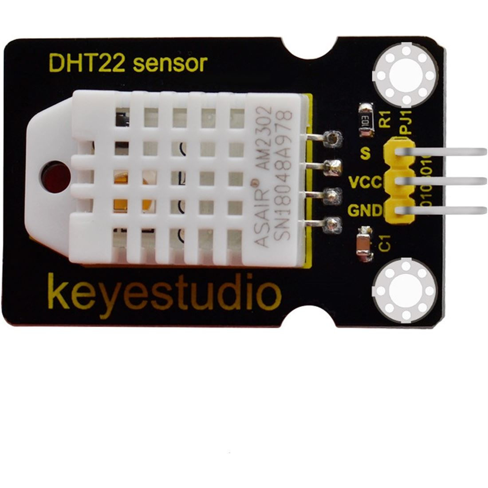
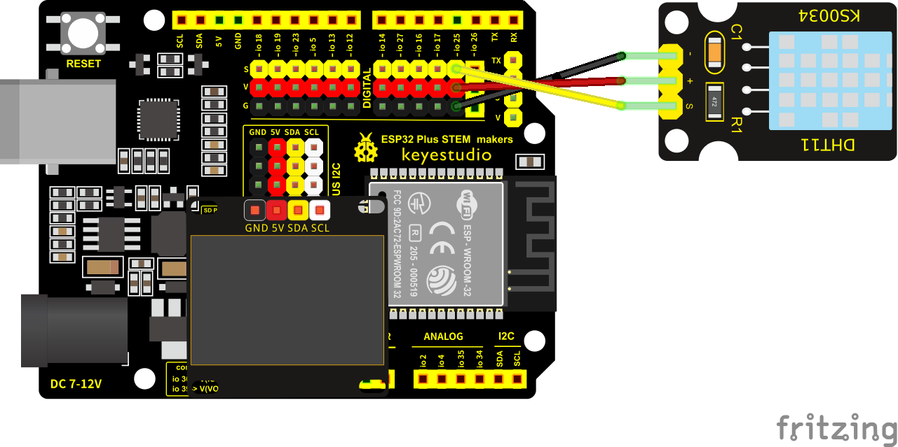

Sensor DHT22
El sensor digital DHT22 nos puede ofrecer temperatura y humedad. Se conecta en un pin digital, en nuestro caso hemos elegido el D3 (IO25) de nuestra placa. Para saber más sobre este sensor podemos visitar la web del mismo en el wiki de keyestudio.

Conexionado
El sensor DHT22 se conecta en un pin digital en nuestro caso hemos elegido el D3 (IO25) de nuestra placa. Conectamos S del sensor a S de pin D3 (IO25) de la placa, + del sensor a V de la placa, y - del sensor a G de la placa.

Tarea. Medida de temperatura y humedad
Conecta la pantalla oled y el sensor DHT22 de forma correcta, y muestra en la pantalla de forma legible y ordenada los valores de temperatura y humedad cada segundo.